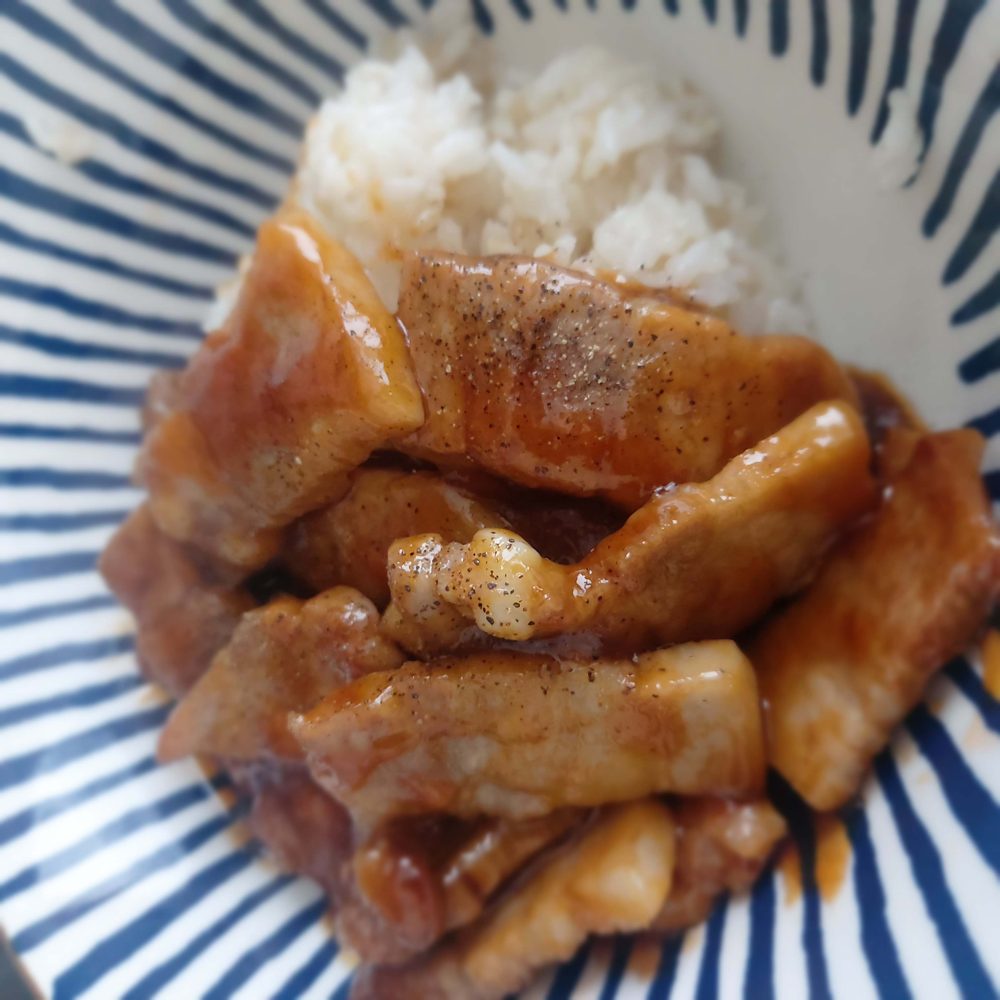
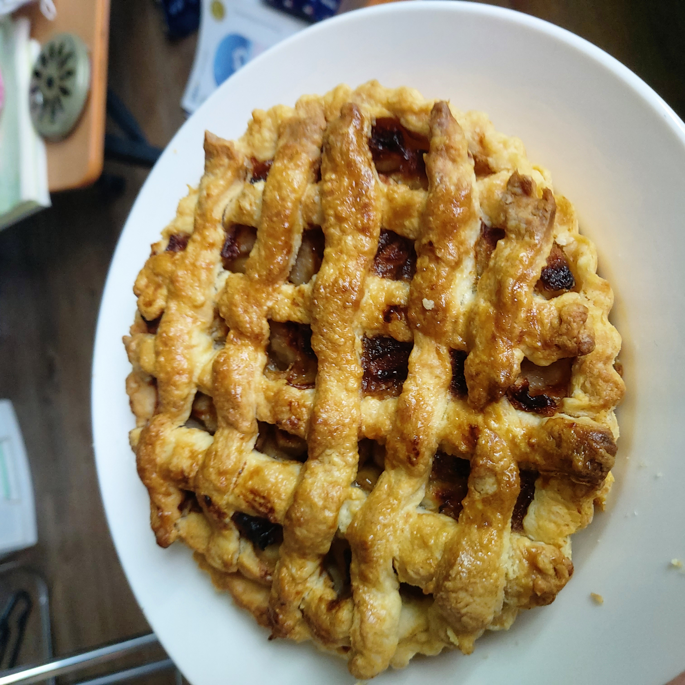
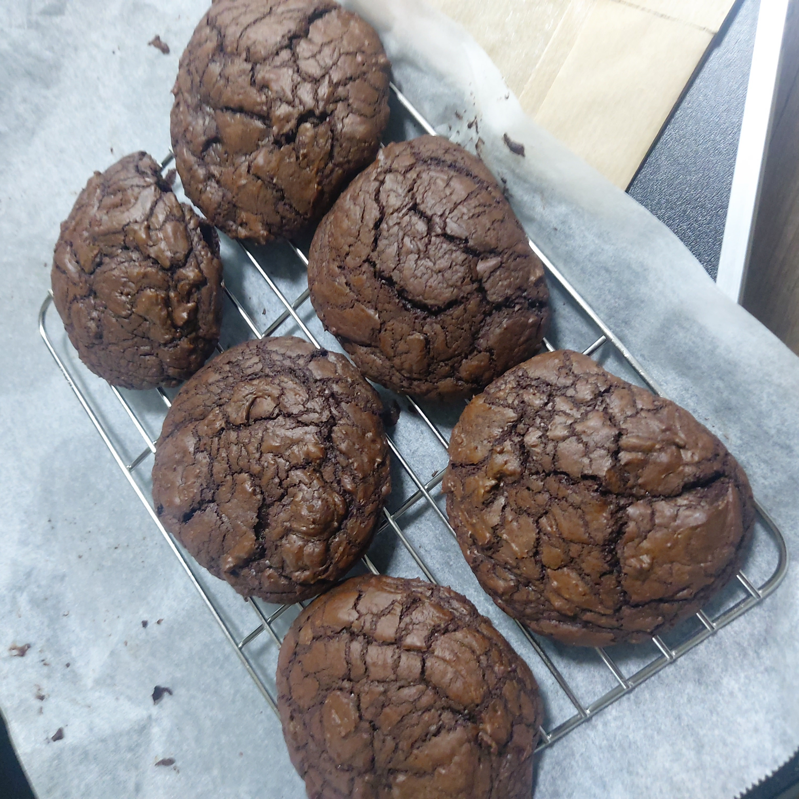
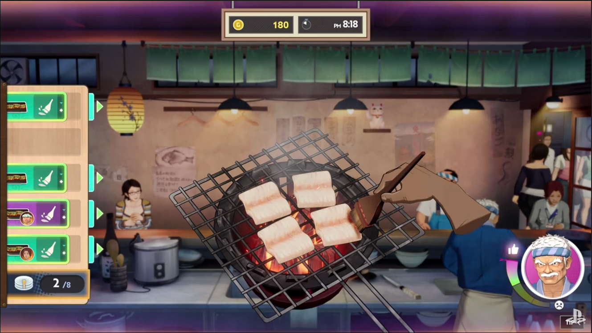
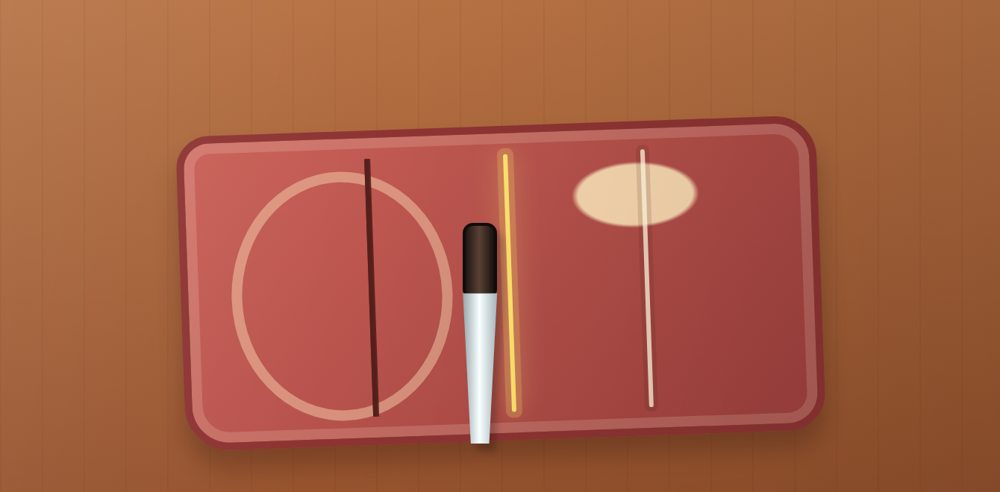
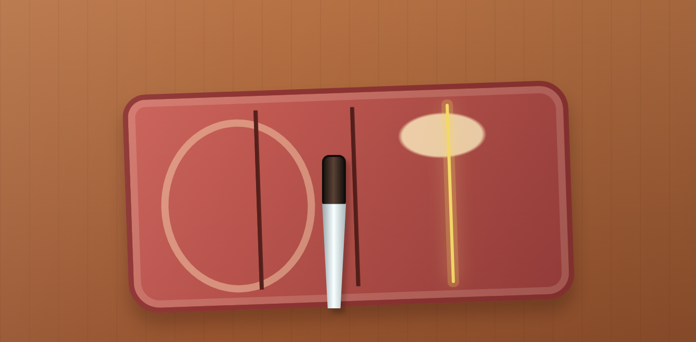
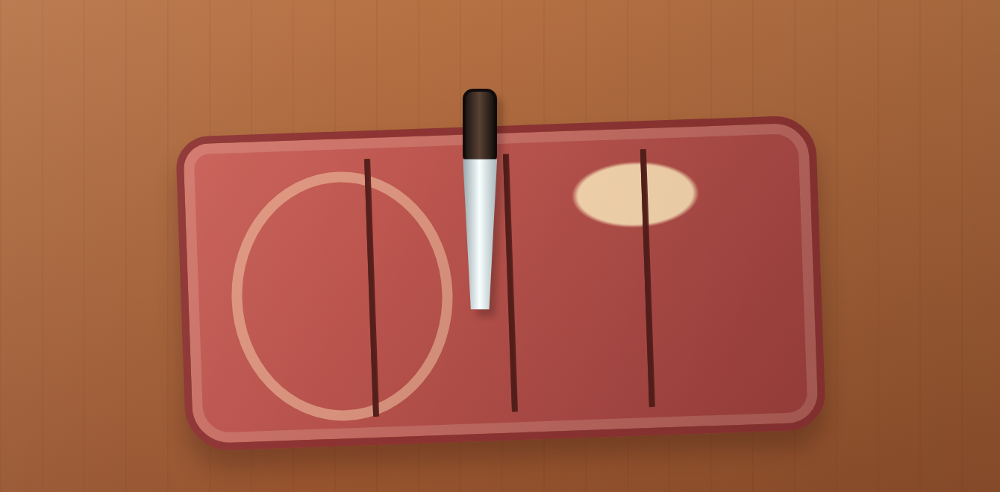
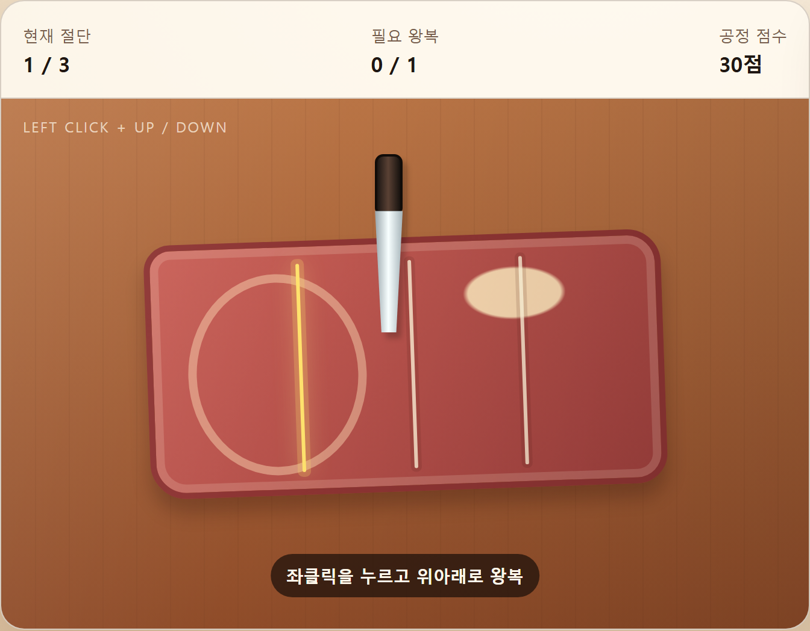
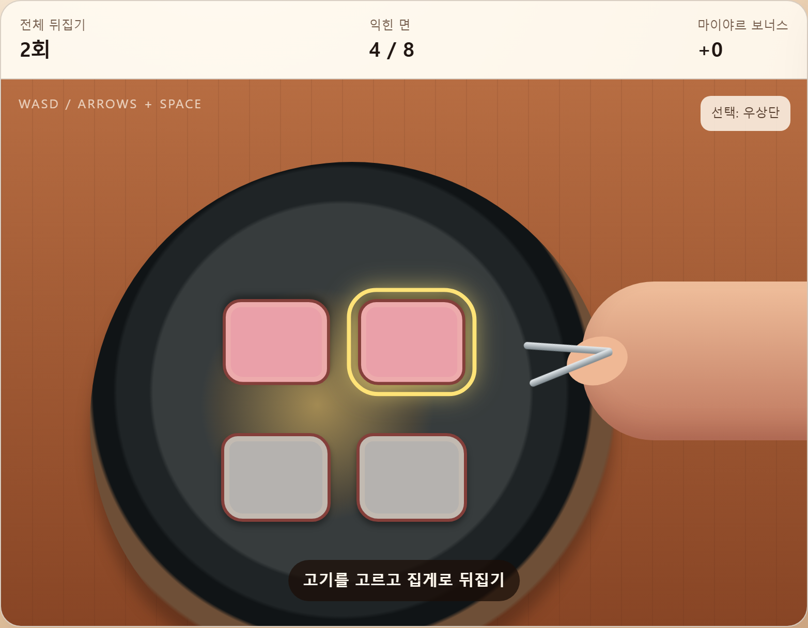

돈테키의 자르기와 굽기를 설계하고, HTML 시제품을 직접 조작하며 입력 방식을 수정했습니다.
지원 동기
데이브 더 다이버를 플레이하며 패러디와 세부 표현에서 게임에 대한 애정을 느꼈습니다. 이런 디테일이 하나의 콘셉트 안에서 연결될 때 작품의 인상이 남고, 다음 작품도 기대하게 된다고 생각합니다.
저도 기능이 설정과 재미에 왜 필요한지 설명하는 기획을 하고 싶습니다. 민트로켓의 작품에서 제가 중요하게 생각하는 방향을 발견했고, 직접 요리해 온 경험을 반쵸 더 셰프의 조리 설계에 연결했습니다.
프로젝트 적합성
초등교육학을 전공했고 취사병으로 복무했습니다. 군 복무 전부터 부타동, 비프 부르기뇽, 파이와 쿠키 등 여러 요리를 만들어 왔습니다. 이번에는 그 경험을 바탕으로 처음 배우는 사람도 따라갈 수 있도록 조리 과정을 나누고, 재료의 변화와 손으로 하는 동작을 게임의 규칙으로 옮겨 보고자 했습니다.
학부 시절 직접 만든 요리 일부

후쿠오카 부타동 돈테키 재현 사진이 아닙니다.

애플파이

쿠키
전략과 턴제, 퍼즐부터 액션 로그라이크와 추리, 캐주얼 게임까지 즐겨 왔습니다. 제가 생각하는 이상적인 게임은 게임에서 익힌 경험을 현실에서도 사용할 수 있는 게임입니다. 이번에도 조리 감각을 살리고 싶었지만, 여러 주문을 처리하는 흐름과 같은 동작을 반복할 때의 피로도 함께 고려해야 한다고 봤습니다.
그 판단을 직접 확인하기 위해 자르기와 굽기를 HTML 시제품으로 만들었습니다. 조작 의도와 규칙은 제가 정하고, AI를 구현 보조 도구로 사용했습니다. 직접 조작했을 때 의도와 다르게 작동하거나 불편한 부분이 있으면, 해당 입력 방식과 피드백을 수정하는 식으로 작업했습니다.
설계 범위와 근거
돈테키를 선택한 이유
돈테키는 일본 정식집에서 직접 먹고 리뷰를 남겼던 메뉴입니다. 소스와 밥의 조화, 와사비 소스를 더했을 때 달라지는 맛이 인상적이었고, 귀국 후에도 직접 재현해 보고 싶었습니다.
접할 기회는 적었지만 일상적인 한 끼라는 인상이 남았습니다. 직접 먹으며 관찰한 특징에서 출발해, 조리 과정을 게임의 동작과 규칙으로 옮기는 설계를 보여주고자 선택했습니다.
한 주문의 조작이 길어지지 않도록, 자르기와 굽기에 집중했습니다.
준비자동 처리
자르기직접 조작
굽기직접 조작
서빙자동 처리

반쵸 더 셰프 공개 트레일러 화면. 공정 흐름과 조작 규칙은 원작의 확정 사양이 아닌 개인 제안입니다.
관찰
공개 트레일러 화면 왼쪽에 여러 주문이 각각의 칸에 표시되어 있었습니다.
해석
여러 주문을 빠르고 정확하게 처리하는 흐름이 중요할 것으로 추론했습니다. 주문 제한 시간과 처리 순서는 확인하지 못했습니다.
개인 설계
준비와 서빙은 요리에서 중요한 과정입니다. 다만 여러 주문을 빠르게 해결하는 게임으로 추측했기 때문에, 준비부터 서빙까지 매번 직접 조작하면 주문 하나를 처리하는 과정이 길어질 수 있다고 봤습니다. 그래서 이번 개인안에서는 두 과정의 직접 조작을 생략하고 자동으로 처리하도록 했습니다.
준비와 서빙은 대결이나 심사처럼 한 접시의 완성도에 집중하는 콘텐츠에서 활용할 여지가 있다고 봅니다. 다만 이번 설계에는 포함하지 않았습니다.
조작 설계와 수정
한 번 자른 뒤에는 버튼을 놓을 수 있게 했습니다
1회 절단 완료

수정 전
계속 누름2회 절단까지 유지
수정 후
놓아도 됨다시 누르면 다음 절단
2회 절단 완료

수정 전
계속 누름3회 절단까지 유지
수정 후
놓아도 됨다시 누르면 다음 절단
3회 절단 완료

수정 전
완료 후 놓기3회 절단 완료
수정 후
완료 후 놓기3회 절단 완료
수정 후에도 계속 누른 채 진행해도 됩니다.
현재 시제품 캡처에 수정 전후의 버튼 입력 규칙을 대응했습니다.
플레이어가 조작하면서 직접 요리하는 듯한 경험을 주고 싶었습니다. 다만 실제로 칼질을 하는 것처럼 조작을 구현해보니, 마우스 버튼을 오래 누르고 있어야 해서 불편했습니다. 그래서 한 번 썰 때까지만 버튼을 누르고 있으면 되도록 판정 단위를 줄였습니다.
칼을 앞뒤로 움직이는 감각을 마우스 왕복 입력으로 표현하고, 한 번 왕복해 자르는 것을 하나의 절단으로 봤습니다. 이제 절단이 끝날 때마다 버튼을 놓을 수 있습니다. 계속 누른 채 다음 절단을 이어가는 것도 가능하므로, 매번 버튼을 놓았다가 다시 누를 필요는 없습니다.
현재 자르기 시제품

개인 HTML 시제품의 상태바와 절단 영역을 캡처한 정적 이미지입니다. 원작 게임 화면이 아닙니다.
자르기 시제품 열기 ↗새 탭
다음 조작 테스트
직접 조작해보니 이전보다 편해졌습니다. 다음 조작 테스트에서는 여러 주문을 연속으로 처리하며 같은 조작을 반복할 때 어느 정도의 피로감이 생기는지 확인하려고 합니다. 현재 방식에 한정하지 않고, 요리하는 느낌을 살리면서도 반복하기 편한 조작을 찾으려 합니다.
명세에서 확인한 점
시제품이 의도와 다르게 작동한 부분을 보며 입력의 시작과 종료, 판정 시점을 더 구체적으로 명세해야 한다는 점도 확인했습니다.
자르기의 입력과 재시도 규칙
개인 설계의 자르기 규칙
항목
규칙
시작 상태
고기와 칼, 절단 가이드를 표시하고 진입 연출 뒤 입력을 받습니다.
기본 입력
마우스 왼쪽 버튼을 누른 채 가이드 방향으로 왕복합니다. 한 번의 왕복을 한 번의 절단으로 판정합니다.
절단 사이 입력
한 번 자른 뒤 버튼을 놓을 수 있습니다. 계속 누른 채 다음 절단으로 이어가도 됩니다.
유효 입력
화면 세로 방향으로 세 번 자릅니다. 너무 짧은 움직임은 무시합니다. 거리 기준과 방향 허용 오차의 최종 수치는 확정하지 않았습니다.
방향 오류
절단 횟수에 포함하지 않고 공정 점수를 10점 차감합니다. 공정 점수는 30점에서 시작합니다.
완료 설계
점수가 남은 상태에서 3회 절단하면 굽기용 고기 4조각을 만들고 굽기로 넘어가도록 설계했습니다.
실패와 재시도
공정 점수가 0이 되면 고기를 교체하고 자르기를 다시 시작하도록 설계했습니다. 독립 시제품에서는 0점 도달 후 30점으로 자동 복귀하는 동작을 확인했습니다.
피드백 설계
유효 절단 위치, 남은 횟수와 감점을 표시합니다. 공정 실패 문구는 “그런 고기를 손님께 내놓을 수 있겠나?”입니다.
점수와 횟수는 개인 설계의 임시 값입니다. 공정 점수는 자르기의 실패와 재시도를 구분하는 값이며, 일반 메뉴의 최종 총점이나 등급이 아닙니다.
독립 시제품에서는 짧은 입력 무시, 방향 오류 감점과 자동 재시작, 계속 누르거나 절단마다 놓는 3회 입력을 확인했습니다. 시제품은 절단 표시와 완료까지 다루며, 실제 고기 4조각 생성과 굽기 전환의 통합 동작은 검증하지 않았습니다.
굽기와 제공 조건
제공 가능과 조리 성공을 따로 판정합니다
개인 굽기 시제품의 조작과 판정 규칙
항목
규칙
고기 배치
고기 4조각을 2 × 2로 배치합니다.
대상 선택
마우스를 고기 위에 올리거나 WASD, 방향키로 대상을 고릅니다. 키보드는 대각선 이동도 가능합니다.
뒤집기
팬 클릭, Space, Enter 또는 시제품의 뒤집기 버튼으로 선택한 조각을 뒤집습니다. 반복해서 뒤집어도 횟수에 따른 감점은 없습니다.
굽는 시간
팬의 불은 자동으로 켜집니다. 팬에 닿는 면마다 시간을 누적하며, 뒤집어도 각 면의 기존 누적 시간은 유지합니다.
성공 조건
4조각의 양면, 총 8면이 각각 5초 이상 익어야 성공합니다.
추가 보너스
10초 이상 익힌 면마다 +5점을 더합니다. 추가 보너스는 성공의 필수 조건이 아닙니다.
5초, 10초, +5점은 게임 시제품의 임시 값입니다. 실제 조리 시간이나 최종 밸런스를 뜻하지 않습니다. 위 규칙은 원작의 확정 사양이 아닌 개인 설계입니다.
제공 버튼이 열린 뒤에도 더 구울 수 있습니다
전체 뒤집기 2회 이상모든 조각의 뒤집기 횟수 합계
제공 버튼 열림성공을 보장하지 않음
더 굽거나 제공플레이어가 제공 시점 선택
제공 시 판정8면 각각 5초 이상인지 확인
성공 또는 실패모두 충족하면 성공 한 면이라도 미달하면 실패
현재 굽기 시제품

전체 뒤집기 2회, 익힌 면 4/8인 개인 시제품 화면입니다. 제공은 가능하지만 성공 조건은 아직 충족하지 않았습니다. 보너스는 검사용 표시이며 최종 총점이나 등급이 아닙니다.
굽기 시제품 열기 ↗새 탭
현재 시제품에서 다룬 범위
제공하면 제공 완료 상태로 바뀌고 성공 여부를 계산한 뒤 조작을 종료합니다. 손님 이모지는 성공과 실패에 공통으로 사용합니다. 결과에 따라 달라지는 손님 반응은 아직 정하지 않았으며 구현하지 않았습니다.
주문 종료는 설계안
성공과 실패 모두 이전 공정으로 돌아가지 않고 주문을 끝내도록 설계했습니다. 현재는 굽기 단일 시제품이며, 전체 주문을 연결해 다시 실행하는 검증은 하지 않았습니다.
데이터 구조
같은 재료와 조리법을 다시 쓰기 위해 정보의 역할을 나눴습니다
메뉴와 레시피, 재료를 연결하고 화면 문구는 별도로 관리합니다. 메뉴를 추가할 때 같은 정보를 중복 작성하는 일을 줄이고, 언어별 표현을 관리하려는 의도입니다.
다섯 가지 정보의 역할 설명 — 확정 스키마가 아닙니다.
메뉴
제공할 음식과 연결할 조리법을 정합니다.
관계
메뉴에 사용할 레시피와 재료의 연결을 관리합니다.
레시피와 단계
한 메뉴의 공정과 실행 순서를 설명합니다.
재료
여러 메뉴에서 사용하는 재료 정보를 재사용합니다.
텍스트
메뉴와 재료 등에 표시할 이름과 설명을 언어별로 관리합니다.
원본 시트에서 확인한 돈테키 연결 예시
기존 데이터 예시이며 현재 두 공정안과 동기화되지 않았습니다. 2026년 10월 12일 원본의 8개 탭에서 A1:N12 범위를 읽고 아래 필드와 값을 대조했습니다. 원본은 양배추 채썰기와 플레이팅을 포함한 이전 확장안이며, 공정 순서는 준비 1, 굽기 2, 플레이팅 3입니다.
TargetMin 70과 TargetMax 90은 확인한 시트 범위에서 의미와 단위를 알 수 없어 초나 점수로 해석하지 않았습니다. 자르기의 30점, 오류 시 −10점, 3회 절단과 굽기의 5초, 10초, 제공 가능 조건인 전체 뒤집기 2회를 이 테이블이 지원한다고 볼 수는 없습니다.
설계 의도와 현재 데이터의 차이
위 연결은 실제 읽은 필드와 값을 대조한 예시입니다. 현재 두 공정안에 맞게 데이터를 동기화하고, 입력과 판정 규칙을 어디에 기록할지 확인하는 작업이 남아 있습니다.
검사기와 통합 실행기의 확인 범위
데이터 구조를 확인하려고 검사기와 통합 실행기를 제작했습니다. 이전 검토에 기록된 잘못된 데이터 통과 사례와 실행 연결의 미완료 사항은 해결 여부를 재확인하지 않았습니다. 독립 자르기와 굽기 시제품의 확인 결과와 구분하며, 검사기의 전체 지원 범위와 통합 실행 완료는 검증 전입니다.
제작 리소스
공정의 상태와 입력에 맞춰 제작 항목을 나눴습니다
제작 요청을 준비하기 위한 초안입니다. 아래 12개 항목은 파일 수량이 아니며, 모두 제작하거나 확보했다는 의미도 아닙니다. 공용 여부는 재사용 제안이고 원작 자산의 존재나 사용 가능 여부를 전제로 하지 않습니다.
아트와 UI: 화면에서 구분해야 할 상태
항목
상태와 사용 시점
공용 여부와 준비 상태
공용 화면
주문 칸, 현재 도구 아이콘, 단계 진행 표시. 주문 선택 가능 상태와 현재 공정을 안내합니다.
공용 후보. 원본 확보 여부 미확인.
준비 연출
재료와 도구의 등장 및 배치. 자르기와 굽기 각각의 진입 연출로 공정 시작과 입력 시작 시점을 구분합니다.
공용 동작 활용 후보. 제작 필요 여부 확인 전.
자르기 오브젝트
손질 전 고기, 잘린 고기, 칼과 도마. 세 번의 절단과 네 조각 완성 상태를 표현합니다.
고기는 메뉴 전용 후보, 도구는 공용 후보. 최종 자산 확보 여부 미확인.
자르기 안내
절단 가이드, 유효 입력 반응, 남은 횟수와 감점 표시. 대기, 유효 절단, 방향 오류를 구분합니다.
공용 후보. 시제품 표현과 최종 자산을 구분하며, 최종 자산 준비 상태는 미확인.
자르기 실패
고기 교체 연출과 실패 문구. 공정 점수 0에서 고기 폐기와 새 재료 진입으로 재시도를 안내합니다.
문구는 명세에 있음. 연출 자산은 미확인, 공용 여부 미정.
굽기 오브젝트
팬, 기름, 집게와 손, 고기 조각. 네 조각 배치와 대상 선택, 뒤집기를 표현합니다.
도구는 공용 후보, 고기 표현은 전용 후보. 최종 자산 확보 여부 미확인.
굽기 상태
미익힘, 익힘, 마이야르 표현. 네 조각 양면의 상태를 전달합니다. 개별 이미지 여덟 장이 필요하다는 뜻은 아닙니다.
이미지 교체 또는 재질과 효과 사용 방식 미정. 공용 여부와 최종 자산 준비 상태 미확인.
제공 화면
제공 버튼, 완성된 돈테키, 자동 서빙 연출. 버튼 비활성 및 활성, 음식 완성과 주문 종료를 안내합니다.
버튼과 동작은 공용 후보, 완성 음식은 전용 후보. 최종 자산 확보 여부 미확인.
손님 반응
말풍선과 이모지로 제공 결과를 전달합니다. 구체적인 성공과 실패 반응 종류는 미정입니다.
공용 후보. 최종 표현과 준비 상태 미정.
사운드: 입력과 연출에 맞출 재생 조건
항목
상태와 사용 시점
공용 여부와 준비 상태
절단 효과음
칼질과 도마 접촉, 오류 안내 후보. 유효 절단과 잘못된 입력에 반응하며, 같은 입력에 중복 재생되지 않도록 발생 조건을 지정해야 합니다.